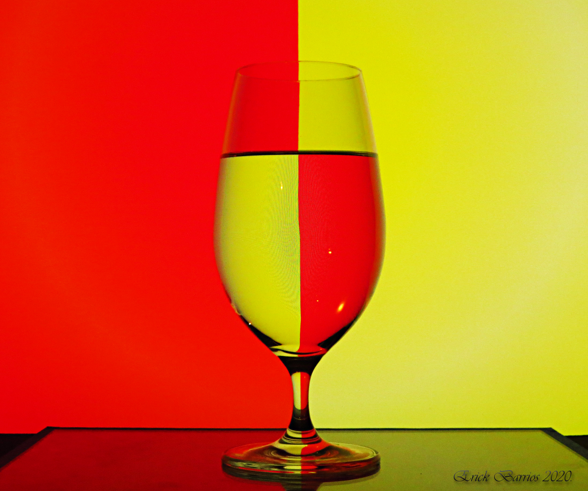
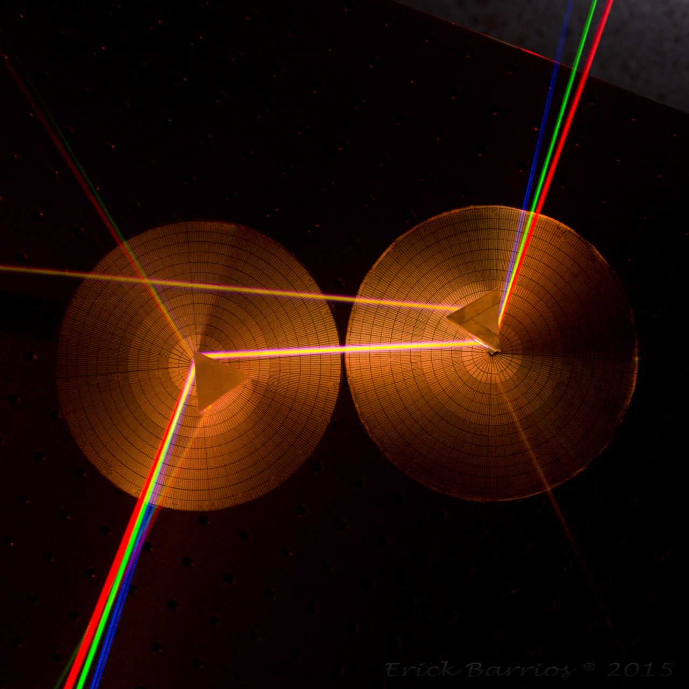
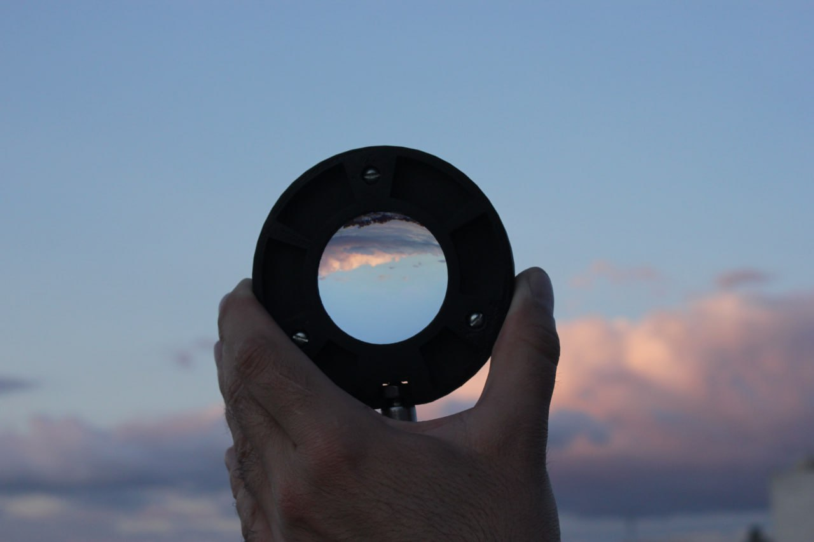
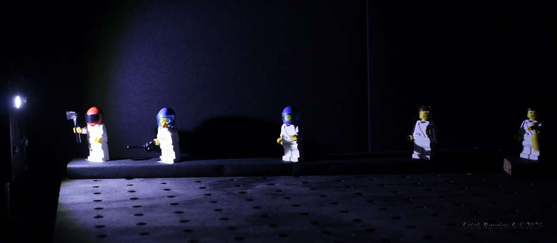

Índice de Refracción
Dispersión y Espectroscopía
Lentes
Propagación de la Luz y Radiometría
Reflexión y Refracción

Este sitio es una iniciativa para compartir saberes de la ciencia que han sido de nuestro interés, con la intención de motivar el continuo aprendizaje y curiosidad del visitante. En el menú superior 'Areas' están seccionados los proyectos que hemos abordado a lo largo de varios años, al ingresar a un área encontrarás una lista de temas acompañadas de una breve descripción, podrás acceder al texto y/o vídeo correspondiente dando click en los recuadros.